Production Agentic AI, AI Security & Cloud MLOps
Amit Kumar Koshta · Data, MLOps & Agentic AI Engineer · IIT Kanpur · Stockholm, Sweden
Architecting verifiable multi-agent ecosystems (MCP, A2A JSON-RPC, Google ADK, LangGraph, Claude Agent SDK, Semantic Kernel), defense-in-depth AI security & EU AI Act governance, and FinOps-calibrated MLOps across GCP, AWS, and Azure.

Flagship Production Architectures
Click any system to inspect its full Mermaid system topology, architectural trade-offs, empirical benchmark charts, and CI verification evidence.
Interactive Runtime Trace & Guardrail Replay Lab
Inspect authentic recorded execution traces, guardrail interventions, FinOps cost ledgers, zero-knowledge A2A JSON-RPC payloads, and SHA-256 FinCEN SAR filings directly from repository test runs.
All 28 Systems — Searchable Architecture Catalog
Filter by engineering domain, protocol/framework stack, or GitHub Actions CI status—or switch to the compact Staff Architecture Matrix view.
Six Specialized Engineering Domains
Select any domain to filter the 28-system catalog directly to that architectural discipline.